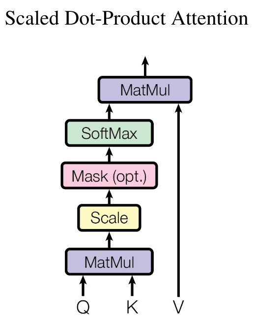

Construyamos un GPT desde cero#
Este cuaderno explica cómo crear un modelo de lenguaje para predecir el próximo carácter, basado en la arquitectura del transformer (más precisamente, el decodificador).
Para ello, utilizamos un archivo de texto moliere.txt que contiene todos los diálogos de las obras de Molière.
Este conjunto de datos se creó a partir de las obras completas de Molière disponibles en Gutenberg.org. He limpiado los datos para conservar solo los diálogos.
import torch
import torch.nn as nn
from torch.nn import functional as F
# Pour utiliser le GPU automatiquement si vous en avez un
device = 'cuda' if torch.cuda.is_available() else 'cpu'
Lectura del conjunto de datos#
Comencemos abriendo y visualizando el contenido de nuestro conjunto de datos.
with open('moliere.txt', 'r', encoding='utf-8') as f:
text = f.read()
print("Nombre de caractères dans le dataset : ", len(text))
Nombre de caractères dans le dataset : 1687290
Mostramos los primeros 250 caracteres:
print(text[:250])
VALÈRE.
Eh bien, Sabine, quel conseil me donnes-tu?
SABINE.
Vraiment, il y a bien des nouvelles. Mon oncle veut résolûment que ma
cousine épouse Villebrequin, et les affaires sont tellement avancées,
que je crois qu'ils eussent été mariés dès aujo
Utilizamos set() para obtener los caracteres únicos presentes en el conjunto de datos.
chars = sorted(list(set(text)))
vocab_size = len(chars)
print(''.join(chars))
print("Nombre de caractères différents : ", vocab_size)
!'(),-.:;?ABCDEFGHIJKLMNOPQRSTUVXYZabcdefghijlmnopqrstuvxyz«»ÇÈÉÊÏàâæçèéêëìîïòôùûŒœ
Nombre de caractères différents : 85
Creación del conjunto de datos de entrenamiento#
Como en el curso 5, vamos a crear un mapping para convertir caracteres en enteros. Este mapping es una forma muy simple de tokenización.
Punto rápido sobre la tokenización#
¿Qué es la tokenización? La tokenización es el proceso que convierte un texto en una secuencia de enteros. Cada entero puede representar un carácter, un grupo de caracteres o una palabra, según el método utilizado.
Equilibrio entre vocabulario y tamaño de secuencia Un buen tokenizador encuentra un equilibrio entre el tamaño del vocabulario (26 para el alfabeto y aproximadamente 100,000 para las palabras en francés). Un vocabulario demasiado pequeño aumenta la longitud de las secuencias (ej.: “Bonjour” se convierte en 7 tokens si se usan caracteres, o 1 token si se usan palabras). En la práctica, los extremos son problemáticos, y se busca un punto medio.
Tokenizadores populares Los tokenizadores son esenciales para el buen funcionamiento de un modelo de lenguaje. Su diseño depende del método y de los datos de entrenamiento. Entre los más utilizados se encuentran SentencePiece de Google y tiktoken de OpenAI.
# Creation d'un mapping de caractère à entiers et inversement
stoi = { ch:i for i,ch in enumerate(chars) }
itos = { i:ch for i,ch in enumerate(chars) }
encode = lambda s: [stoi[c] for c in s] # encore : prend un string et output une liste d'entiers
decode = lambda l: ''.join([itos[i] for i in l]) # decode: prend une liste d'entiers et output un string
print(encode("Bonjour à tous"))
print(decode(encode("Bonjour à Tous")))
[13, 50, 49, 46, 50, 56, 53, 1, 68, 1, 55, 50, 56, 54]
Bonjour à Tous
Vamos a transformar nuestro conjunto de datos en secuencias de enteros y almacenarlo en forma de tensores PyTorch.
data = torch.tensor(encode(text), dtype=torch.long)
print(data[:250]) # Les 250 premiers caractères encodé
tensor([33, 12, 23, 64, 29, 16, 8, 0, 0, 16, 44, 1, 38, 45, 41, 49, 6, 1,
30, 37, 38, 45, 49, 41, 6, 1, 52, 56, 41, 47, 1, 39, 50, 49, 54, 41,
45, 47, 1, 48, 41, 1, 40, 50, 49, 49, 41, 54, 7, 55, 56, 11, 0, 0,
30, 12, 13, 20, 25, 16, 8, 0, 0, 33, 53, 37, 45, 48, 41, 49, 55, 6,
1, 45, 47, 1, 59, 1, 37, 1, 38, 45, 41, 49, 1, 40, 41, 54, 1, 49,
50, 56, 57, 41, 47, 47, 41, 54, 8, 1, 24, 50, 49, 1, 50, 49, 39, 47,
41, 1, 57, 41, 56, 55, 1, 53, 73, 54, 50, 47, 82, 48, 41, 49, 55, 1,
52, 56, 41, 1, 48, 37, 0, 39, 50, 56, 54, 45, 49, 41, 1, 73, 51, 50,
56, 54, 41, 1, 33, 45, 47, 47, 41, 38, 53, 41, 52, 56, 45, 49, 6, 1,
41, 55, 1, 47, 41, 54, 1, 37, 42, 42, 37, 45, 53, 41, 54, 1, 54, 50,
49, 55, 1, 55, 41, 47, 47, 41, 48, 41, 49, 55, 1, 37, 57, 37, 49, 39,
73, 41, 54, 6, 0, 52, 56, 41, 1, 46, 41, 1, 39, 53, 50, 45, 54, 1,
52, 56, 3, 45, 47, 54, 1, 41, 56, 54, 54, 41, 49, 55, 1, 73, 55, 73,
1, 48, 37, 53, 45, 73, 54, 1, 40, 72, 54, 1, 37, 56, 46, 50])
Ahora vamos a dividir nuestro texto en partes de entrenamiento y validación. Usamos una proporción de 0.9-0.1.
n = int(0.9*len(data)) # 90% pour le train et 10% pour la validation
train_data = data[:n]
val_data = data[n:]
Para nuestro modelo de lenguaje, también vamos a definir un tamaño de contexto block_size.
block_size = 8
train_data[:block_size+1]
tensor([33, 12, 23, 64, 29, 16, 8, 0, 0])
Aquí, los 8 primeros caracteres representan el contexto y el 9º es la etiqueta. Este simple ejemplo en realidad agrupa varios casos, ya que nuestro modelo debe predecir el próximo carácter independientemente del contexto. En esta lista, tenemos 8 ejemplos:
x = train_data[:block_size]
y = train_data[1:block_size+1]
for t in range(block_size):
context = x[:t+1]
target = y[t]
print(f"Quand l'entrée est {context.numpy()} le label est : {target}")
Quand l'entrée est [33] le label est : 12
Quand l'entrée est [33 12] le label est : 23
Quand l'entrée est [33 12 23] le label est : 64
Quand l'entrée est [33 12 23 64] le label est : 29
Quand l'entrée est [33 12 23 64 29] le label est : 16
Quand l'entrée est [33 12 23 64 29 16] le label est : 8
Quand l'entrée est [33 12 23 64 29 16 8] le label est : 0
Quand l'entrée est [33 12 23 64 29 16 8 0] le label est : 0
Ahora sabemos cómo crear un conjunto de entradas/etiquetas a partir de un solo ejemplo. Adaptemos este método para un procesamiento por batch:
batch_size = 4 # La taille de batch (les séquences calculés en parallèles)
block_size = 8 # La taille de contexte maximale pour une prédiction du modèle
def get_batch(split):
# On genere un batch de données (sur train ou val)
data = train_data if split == 'train' else val_data
#On génére batch_size indice de début de séquence pris au hasard dans le dataset
ix = torch.randint(len(data) - block_size, (batch_size,))
# On stocke dans notre tenseur torch
x = torch.stack([data[i:i+block_size] for i in ix])
y = torch.stack([data[i+1:i+block_size+1] for i in ix])
x, y = x.to(device), y.to(device) # On met les sur le GPU si on en a un
return x, y
xb, yb = get_batch('train')
print('Entrée : ')
print(xb.shape)
print(xb)
print('Labels :')
print(yb.shape)
print(yb)
Entrée :
torch.Size([4, 8])
tensor([[53, 69, 39, 41, 2, 0, 0, 27],
[53, 1, 56, 49, 1, 39, 84, 56],
[54, 11, 0, 0, 24, 12, 30, 14],
[ 1, 51, 72, 53, 41, 8, 0, 0]], device='cuda:0')
Labels :
torch.Size([4, 8])
tensor([[69, 39, 41, 2, 0, 0, 27, 19],
[ 1, 56, 49, 1, 39, 84, 56, 53],
[11, 0, 0, 24, 12, 30, 14, 12],
[51, 72, 53, 41, 8, 0, 0, 33]], device='cuda:0')
Cada uno de estos 4 ejemplos agrupa 8 ejemplos distintos (como se explicó anteriormente), lo que suma un total de 32 ejemplos.
Modelo bigrama#
En el curso 5 sobre NLP, vimos el bigrama, el modelo de lenguaje más simple. Predice el próximo carácter a partir de un solo carácter de contexto. Denotamos \(B\) para el tamaño del batch, \(T\) para el tamaño del block y \(C\) para el tamaño del vocabulario.
Para probar su rendimiento en el conjunto de datos moliere.txt, implémentalo rápidamente en PyTorch:
class BigramLanguageModel(nn.Module):
def __init__(self, vocab_size):
super().__init__()
# Chaque token va directement lire la valeur du prochain à partir d'une look-up table entrainé
self.token_embedding_table = nn.Embedding(vocab_size, vocab_size)
def forward(self, idx, targets=None):
# Taille (B,T)
logits = self.token_embedding_table(idx)
# Taille (B,T,C)
# Pour gérer le cas de la génération (pas de target)
if targets is None:
loss = None
else: # Cas de l'entraînement
B, T, C = logits.shape
logits = logits.view(B*T, C)
targets = targets.view(B*T)
loss = F.cross_entropy(logits, targets)
return logits, loss
def generate(self, idx, max_new_tokens):
# idx est de la taille (B,T) avec T le contexte actuel
for _ in range(max_new_tokens):
# Forward du modèle pour récuperer les prédictions
logits, _ = self(idx)
# On prend uniquement le dernier caractère
logits = logits[:, -1, :] # devient (B, C)
# On applique la softmax pour récuperer les probabilités
probs = F.softmax(logits, dim=-1) # (B, C)
# On sample avec torch.multinomial
idx_next = torch.multinomial(probs, num_samples=1) # devient (B, 1)
# On ajouter l'élément sample à la séquence actuelle
idx = torch.cat((idx, idx_next), dim=1) # (B, T+1)
return idx
m = BigramLanguageModel(vocab_size).to(device)
logits, loss = m(xb, yb)
print(logits.shape)
print(loss)
torch.Size([32, 85])
tensor(4.6802, device='cuda:0', grad_fn=<NllLossBackward0>)
El modelo está implementado pero no entrenado. Si lo probamos así, obtenemos resultados catastróficos:
base=torch.zeros((1, 1), dtype=torch.long).to(device) # Le premier élément est un 0 (token de retour à la ligne)
# On génère 100 éléments
print(decode(m.generate(idx = base , max_new_tokens=100)[0].tolist()))
CZjb!DzPGŒR?'hô.ù
cddhhf,séÇqmp.ÉMjôCùÊF:TAFYèL àP;zbVmëtuPipL.ôHtSEé,t:æéÉYÈìïë?VGYxoùyçnï'lpôHà!ô
Es completamente aleatorio, lo cual es lógico porque el modelo está inicializado aleatoriamente.
Ahora vamos a entrenar el modelo:
optimizer = torch.optim.AdamW(m.parameters(), lr=1e-3)
batch_size = 32
steps=10000
for step in range(steps): # Nombre d'étape d'entraînement (élements traités = steps*batch_size)
# On récupère un batch de données aléatoires
xb, yb = get_batch('train')
# On calcule le loss
logits, loss = m(xb, yb)
optimizer.zero_grad(set_to_none=True)
# Retropropagation
loss.backward()
# Mise à jour des poids du modèle
optimizer.step()
print(loss.item())
/home/aquilae/anaconda3/envs/dev/lib/python3.11/site-packages/tqdm/auto.py:21: TqdmWarning: IProgress not found. Please update jupyter and ipywidgets. See https://ipywidgets.readthedocs.io/en/stable/user_install.html
from .autonotebook import tqdm as notebook_tqdm
2.2493152618408203
Generemos a partir de nuestro modelo entrenado:
print(decode(m.generate(idx = torch.zeros((1, 1), dtype=torch.long).to(device), max_new_tokens=300)[0].tolist()))
ELASGOXûÏï!
ANDann donde se ns ntrar pous fa àTEn!.
TELITEL'enomouvûûKbeue
SGAvore oue mesontre
t de pou n qur quvabou qude dente je père e em'eni
La d'euhèmpon, j'es en paiqus de rau plenoilà jonont DARLysontausqus es ei voisangur s ve.
DO lar dire tré quseuqu'arme à ai? t pe ne ndome l pa,
Observamos una mejora en la estructuración de los datos, y algunas palabras parecen casi correctas. Pero el resultado sigue siendo catastrófico, lo cual es lógico porque el bigrama es un modelo demasiado simple.
Self-Attention#
Ahora presentaremos paso a paso el concepto de self-attention, un elemento clave de la arquitectura de los transformers.
¿Qué queremos hacer?#
Comencemos con una idea simple. Tenemos un tensor de tamaño \((B,T,C)\). Queremos que cada elemento \(T\) sea el promedio del elemento actual y los elementos anteriores, sin tener en cuenta los elementos siguientes. Es la forma más simple de dar importancia a los elementos anteriores para predecir el valor actual (esta es la idea detrás del mecanismo de atención).
En Python, podemos implementar esta idea de la siguiente manera:
# Création de notre tenseur random
B,T,C = 4,4,2
x = torch.randn(B,T,C)
x.shape
torch.Size([4, 4, 2])
# Calcul de la moyenne des éléments précédents (incluant l'élément actuel) pour chaque valeur.
xbow = torch.zeros((B,T,C))
for b in range(B):
for t in range(T):
xprev = x[b,:t+1] # (t,C)
xbow[b,t] = torch.mean(xprev, 0)
print(x[0])
print(xbow[0])
tensor([[ 1.5023, -0.5911],
[ 1.0199, -0.2976],
[-1.7581, 0.0969],
[ 0.7444, -0.3360]])
tensor([[ 1.5023, -0.5911],
[ 1.2611, -0.4443],
[ 0.2547, -0.2639],
[ 0.3771, -0.2819]])
Obtenemos lo que queríamos: cada elemento corresponde al promedio del elemento actual con los elementos anteriores.
Sin embargo, sabemos que los bucles for son ineficientes para los cálculos. Preferiríamos una operación matricial para hacer lo mismo.
Recuerdo sobre la multiplicación de matrices#
Multiplicación matricial: Matriz \((3 \times 3)\) por Matriz \((3 \times 2)\) Matrices iniciales
Sea la matriz \(A\) de dimensiones \((3 \times 3)\):
\(A = \begin{pmatrix} a_{11} & a_{12} & a_{13} \\ a_{21} & a_{22} & a_{23} \\ a_{31} & a_{32} & a_{33} \end{pmatrix}\)
y la matriz \(B\) de dimensiones \((3 \times 2)\):
\(B = \begin{pmatrix} b_{11} & b_{12} \\ b_{21} & b_{22} \\ b_{31} & b_{32} \end{pmatrix}\)
La multiplicación matricial \(C = A \times B\) da una matriz \(C\) de dimensiones \((3 \times 2)\):
\(C = \begin{pmatrix} c_{11} & c_{12} \\ c_{21} & c_{22} \\ c_{31} & c_{32} \end{pmatrix}\)
donde cada elemento \(c_{ij}\) se calcula de la siguiente manera:
\(c_{ij} = \sum_{k=1}^{3} a_{ik} \cdot b_{kj}\)
Es decir:
\(c_{11} = a_{11}b_{11} + a_{12}b_{21} + a_{13}b_{31}\)
\(c_{12} = a_{11}b_{12} + a_{12}b_{22} + a_{13}b_{32}\)
\(c_{21} = a_{21}b_{11} + a_{22}b_{21} + a_{23}b_{31}\)
\(c_{22} = a_{21}b_{12} + a_{22}b_{22} + a_{23}b_{32}\)
\(c_{31} = a_{31}b_{11} + a_{32}b_{21} + a_{33}b_{31}\)
\(c_{32} = a_{31}b_{12} + a_{32}b_{22} + a_{33}b_{32}\)
Aquí hay un ejemplo en Python que ilustra esto:
a = torch.ones(3, 3)
b = torch.randint(0,10,(3,2)).float()
c = a @ b
print('a=')
print(a)
print('--')
print('b=')
print(b)
print('--')
print('c=')
print(c)
a=
tensor([[1., 1., 1.],
[1., 1., 1.],
[1., 1., 1.]])
--
b=
tensor([[7., 6.],
[5., 0.],
[1., 8.]])
--
c=
tensor([[13., 14.],
[13., 14.],
[13., 14.]])
El truco matemático para el self-attention#
Ahora es cuando la magia ocurre. Cuando, en lugar de una matriz de 1, tomamos una matriz triangular inferior y volvemos a hacer el cálculo:
a = torch.tril(torch.ones(3, 3))
b = torch.randint(0,10,(3,2)).float()
c = a @ b
print('a=')
print(a)
print('--')
print('b=')
print(b)
print('--')
print('c=')
print(c)
a=
tensor([[1., 0., 0.],
[1., 1., 0.],
[1., 1., 1.]])
--
b=
tensor([[1., 2.],
[1., 4.],
[6., 6.]])
--
c=
tensor([[ 1., 2.],
[ 2., 6.],
[ 8., 12.]])
Cada valor de la matriz es la suma del valor actual y los valores anteriores. ¡Es casi lo que queremos! Solo hay que normalizar según las filas:
a = torch.tril(torch.ones(3, 3))
a = a / torch.sum(a, 1, keepdim=True)
b = torch.randint(0,10,(3,2)).float()
c = a @ b
print('a=')
print(a)
print('--')
print('b=')
print(b)
print('--')
print('c=')
print(c)
a=
tensor([[1.0000, 0.0000, 0.0000],
[0.5000, 0.5000, 0.0000],
[0.3333, 0.3333, 0.3333]])
--
b=
tensor([[1., 2.],
[8., 6.],
[9., 8.]])
--
c=
tensor([[1.0000, 2.0000],
[4.5000, 4.0000],
[6.0000, 5.3333]])
¡Y listo! Hemos reemplazado nuestro doble bucle for por una simple multiplicación matricial y una normalización de los valores.
Ahora vamos a usarlo para calcular xbow y comparar su valor con el calculado con nuestro doble bucle:
wei = torch.tril(torch.ones(T, T))
wei = wei / wei.sum(1, keepdim=True)
xbow2 = wei @ x # (B, T, T) @ (B, T, C) ----> (B, T, C) fonctionne grâce au broadcasting de pytorch
torch.allclose(xbow, xbow2) # Vérifie que tous les éléments sont identiques
True
En lugar de la normalización, podemos usar la función softmax.
tril = torch.tril(torch.ones(T, T))
wei = torch.zeros((T,T))
# On met toutes les valeurs égales à 0 à la valeur -inf
wei = wei.masked_fill(tril == 0, float('-inf'))
print(wei)
tensor([[0., -inf, -inf, -inf],
[0., 0., -inf, -inf],
[0., 0., 0., -inf],
[0., 0., 0., 0.]])
Ahora podemos aplicar la softmax a la matriz y ¡TADAAA!:
wei = F.softmax(wei, dim=-1)
print(wei)
xbow3 = wei @ x
torch.allclose(xbow, xbow3)
tensor([[1.0000, 0.0000, 0.0000, 0.0000],
[0.5000, 0.5000, 0.0000, 0.0000],
[0.3333, 0.3333, 0.3333, 0.0000],
[0.2500, 0.2500, 0.2500, 0.2500]])
True
En la práctica, la versión con softmax se utiliza para la capa self-attention.
Self-Attention: el corazón del transformer#
Actualmente, la matriz \(wei\) contiene valores uniformes en cada fila, lo que no proporciona ninguna información real sobre la importancia de las informaciones anteriores.
Es aquí donde interviene el concepto de self-attention. Lo que queremos es una matriz \(wei\) que podamos entrenar.
Vamos a crear 3 valores a partir de nuestro valor \(x\):
query: ¿Qué estoy buscando? Este valor representa lo que cada posición de la secuencia intenta encontrar en las otras posiciones.
key: ¿Qué contengo? Este valor representa lo que cada posición de la secuencia contiene como información, que podría ser relevante para otras posiciones.
value: ¿Cuál es mi valor? Este valor representa la información real a extraer de cada posición de la secuencia, si se considera pertinente.
Para extraer los valores query, key y value, utilizamos una capa lineal que proyecta la entrada en una dimensión head_size.
Para calcular la importancia de un elemento anterior de la secuencia en relación con el elemento actual, realizamos el producto escalar entre los query \(Q\) y los key \(K\) (transpuesta):
\(wei = QK^T\)
Para obtener pesos de atención (suma igual a 1), aplicamos la softmax y multiplicamos por los value \(V\):
\(Output = \text{softmax}\left(wei\right) \cdot V\)

En Python, se implementa de la siguiente manera:
B,T,C = 4,8,32 # batch, time, channels
x = torch.randn(B,T,C)
head_size = 16 # Valeur de head_size (projection de x)
key = nn.Linear(C, head_size, bias=False)
query = nn.Linear(C, head_size, bias=False)
value = nn.Linear(C, head_size, bias=False)
k = key(x) # (B, T, 16)
q = query(x) # (B, T, 16)
wei = q @ k.transpose(-2, -1) # (B, T, 16) @ (B, 16, T) ---> (B, T, T)
tril = torch.tril(torch.ones(T, T))
wei = wei.masked_fill(tril == 0, float('-inf')) # Pour appliquer le softmax, il faut des valeurs -inf
wei = F.softmax(wei, dim=-1)
v = value(x)
out = wei @ v
out.shape
torch.Size([4, 8, 16])
Nuestra matriz \(wei\) ahora es completamente entrenable, y es posible usar esta capa para entrenar una red neuronal.
Notas sobre la capa self-attention:
La atención es un mecanismo de comunicación que puede verse como un grafo con conexiones entre los nodos (en nuestro caso, los nodos finales están conectados a todos los nodos anteriores).
En la capa de atención, no hay ninguna noción de la posición de los elementos en relación con los demás. Para solucionar este problema, habrá que añadir un positionnal_embedding (ver continuación del curso).
Para ser precisos, no hay ninguna interacción a lo largo de la dimensión batch: cada elemento del batch se procesa de manera independiente de los demás. Es un poco como si tuviéramos batch_size grafos independientes.
Este block de atención se llama decoder block. Tiene la particularidad de que cada elemento solo se comunica con el pasado (gracias a la matriz triangular inferior). Sin embargo, existen otras capas de atención (encoder) que permiten la comunicación de todos los elementos entre sí (para la traducción, el análisis de sentimientos o incluso el procesamiento de imágenes).
Se habla de self-attention porque los query, key y value provienen de la misma fuente. Es posible tener query, key y value que provienen de fuentes diferentes: en ese caso se habla de cross-attention.
Si lees el papel Attention is all you need, notarás que hay una normalización por la raíz de la head_size:

Esto permite una estabilidad de la función softmax durante la inicialización de los pesos en particular.
Implementemos ahora una clase head que realice las operaciones de la self-attention. Es simplemente lo que hemos visto anteriormente en forma de clase.
class Head(nn.Module):
""" Couche de self-attention unique """
def __init__(self, head_size,n_embd,dropout=0.2):
super().__init__()
self.key = nn.Linear(n_embd, head_size, bias=False)
self.query = nn.Linear(n_embd, head_size, bias=False)
self.value = nn.Linear(n_embd, head_size, bias=False)
self.register_buffer('tril', torch.tril(torch.ones(block_size, block_size)))
# Ajout de dropout pour la regularization
self.dropout = nn.Dropout(dropout)
def forward(self, x):
B,T,C = x.shape
k = self.key(x) # (B,T,C)
q = self.query(x) # (B,T,C)
# Le * C**-0.5 correspond à la normalisation par la racine de head_size
wei = q @ k.transpose(-2,-1) * C**-0.5 # (B, T, C) @ (B, C, T) -> (B, T, T)
wei = wei.masked_fill(self.tril[:T, :T] == 0, float('-inf')) # (B, T, T)
wei = F.softmax(wei, dim=-1) # (B, T, T)
wei = self.dropout(wei)
v = self.value(x) # (B,T,C)
out = wei @ v # (B, T, T) @ (B, T, C) -> (B, T, C)
return out
Multi-Head Attention#
En el papel Attention is all you need, se propone una variante de la self-attention. Esta variante se llama multi-head attention y consiste simplemente en tener varias capas de self-attention en paralelo. El objetivo de esta capa es paralelizar el procesamiento para que sea más rápido en GPU.

La implementación es bastante simple ya que se trata simplemente de varias capas head.
class MultiHeadAttention(nn.Module):
""" Plusieurs couches de self attention en parallèle"""
def __init__(self, num_heads, head_size,n_embd,dropout):
super().__init__()
# Création de num_head couches head de taille head_size
self.heads = nn.ModuleList([Head(head_size) for _ in range(num_heads)])
# Couche pour Linear (voir schema) après concatenation
self.proj = nn.Linear(n_embd, n_embd)
# Dropout si besoin
self.dropout = nn.Dropout(dropout)
def forward(self, x):
out = torch.cat([h(x) for h in self.heads], dim=-1)
out = self.dropout(self.proj(out))
return out
Capa Feed Forward#
Un último elemento del transformer que podemos ver en el papel Attention is all you need es la capa Feed Forward, que es simplemente una pequeña red fully connected.
Se implementa en Python de la siguiente manera:
class FeedFoward(nn.Module):
def __init__(self, n_embd,dropout):
super().__init__()
self.net = nn.Sequential(
# 4*n_embd comme dans le papier
nn.Linear(n_embd, 4 * n_embd),
nn.ReLU(),
nn.Linear(4 * n_embd, n_embd),
nn.Dropout(dropout),
)
def forward(self, x):
return self.net(x)
Capa transformer#
Ahora tenemos todos los elementos para implementar nuestra capa transformer, que utilizará multi-head attention y feed forward. En la figura principal del papel, también notamos que hay conexiones residuales entre el input y el output de las capas de attention y de feed forward. Estas conexiones facilitan el entrenamiento de un modelo profundo (más detalles en el papel Deep Residual Learning for Image Recognition). Por lo tanto, también implementaremos estas conexiones residuales. Para la layer norm, no entraremos en detalles aquí, pero podemos comparar su utilidad con una capa de batch norm (más detalles en este blogpost). Por lo tanto, utilizamos simplemente la implementación PyTorch de la layer norm.
Aquí está la implementación Python:
class TransformerBlock(nn.Module):
""" Block transformer"""
def __init__(self, n_embd, n_head):
super().__init__()
head_size = n_embd // n_head
self.sa = MultiHeadAttention(n_head, head_size)
self.ffwd = FeedFoward(n_embd)
self.ln1 = nn.LayerNorm(n_embd)
self.ln2 = nn.LayerNorm(n_embd)
def forward(self, x):
x = x + self.sa(self.ln1(x)) # x+ car c'est une connexion résiduelle
x = x + self.ffwd(self.ln2(x))
return x
Nota: Aplicamos la layer norm antes de las capas (a diferencia del papel). Es la única parte del transformer que ha sido modificada desde la publicación del papel, y que mejora el rendimiento.
Para mayor claridad, vamos a crear nuestro modelo y optimizarlo en el siguiente cuaderno.